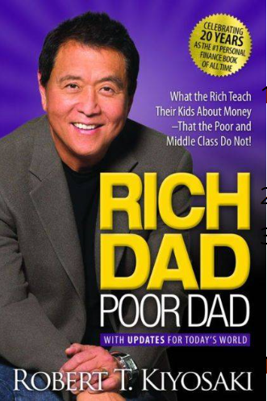

Rich Dad Poor Dad

🔹 Introduction to the Book
Rich Dad Poor Dad is one of the most popular and influential personal finance books in the world.
Written by Robert T. Kiyosaki, the book challenges traditional beliefs about money, jobs,
education, and wealth.
Instead of teaching how to earn money through a regular job, the book focuses on financial
intelligence, investing, and building assets. It explains why many educated and hardworking
people struggle financially, while others become wealthy with less formal education.
The book is written in a storytelling format, comparing the financial mindsets of two father
figures in the author’s life:
- Poor Dad – his biological father (highly educated, government employee)
- Rich Dad – his best friend’s father (entrepreneur, investor)
🔹 Core Philosophy of the Book
“The rich don’t work for money. Money works for them.”
The book teaches that financial success depends more on how you think about money
than how much money you earn.
🔹 Key Concepts Explained in Detail
1️⃣ Difference Between Rich Dad and Poor Dad Thinking
| Poor Dad Thinking |
Rich Dad Thinking |
| Go to school, get good grades |
Learn how money works |
| Get a secure job |
Build businesses and investments |
| Work for money |
Make money work for you |
| Avoid risk |
Learn to manage risk |
| Pay expenses first |
Invest first |
This comparison helps readers understand how mindset shapes financial outcomes.
2️⃣ Assets vs Liabilities (Most Important Lesson)
One of the most powerful lessons in the book is the difference between assets and liabilities.
- Assets: Put money into your pocket
- Examples: rental property, businesses, stocks, mutual funds, intellectual property
- Liabilities: Take money out of your pocket
- Examples: house loan, car loan, credit cards, luxury expenses
Rich people focus on buying assets, while poor and middle-class people often buy
liabilities thinking they are assets.
3️⃣ Importance of Financial Education
The book strongly criticizes traditional education systems for not teaching money management, such as:
- Investing
- Taxes
- Cash flow
- Business skills
Kiyosaki explains that financial education is more important than academic degrees
when it comes to wealth creation.
4️⃣ The Cash Flow Quadrant
- E – Employee: Works for salary
- S – Self-Employed: Owns a job (doctor, lawyer)
- B – Business Owner: Owns systems that work for them
- I – Investor: Money works for them
Rich people aim to move from E and S to B and I.
5️⃣ Overcoming Fear and Risk
- Fear of losing money keeps people poor
- Rich people learn from failure
- Taking calculated risks leads to growth
The book encourages readers to develop courage, patience, and discipline.
6️⃣ Role of Taxes and Corporations
- Rich people legally reduce taxes using businesses and corporations
- Employees pay the highest taxes
- Financial knowledge helps protect income
7️⃣ Working to Learn, Not Just to Earn
- Learn sales, communication, leadership, and investing
- Choose learning over salary initially
- Gain multiple skills instead of relying on one profession
🔹 Writing Style and Structure
- Simple language
- Real-life examples
- Story-based learning
- Motivational tone
🔹 Who Should Read This Book?
- Students
- Working professionals
- Entrepreneurs
- Business owners
- Anyone struggling financially
- People who want financial independence
No prior finance knowledge is required.
🔹 Why the Book Is Still Relevant Today
- Financial literacy is still missing in education
- Rising expenses and debts affect everyone
- Passive income is more important than ever
🔹 Criticism and Limitations
- It lacks step-by-step investment instructions
- Examples are more motivational than technical
However, its goal is to change mindset, not teach accounting.
🔹 Key Takeaways from the Book
- Wealth is built through assets
- Financial intelligence is essential
- Mindset determines success
- Money should work for you
- Learning never stops
🔹 Final Summary
Rich Dad Poor Dad is not just a finance book—it is a mindset-changing guide.
It teaches readers to think differently about money, work, and success.
The book encourages financial independence, entrepreneurship, and lifelong learning.
Its biggest strength lies in making people question traditional beliefs and take control
of their financial future.
← Back to Resources